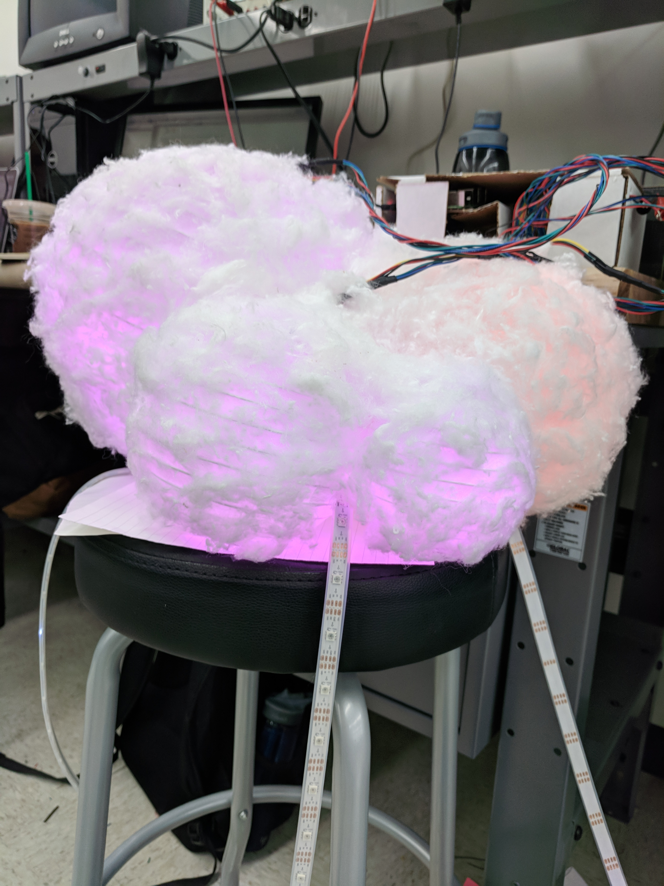
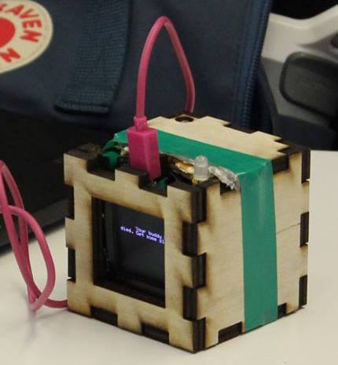
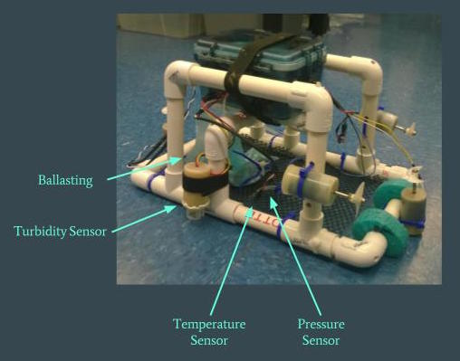
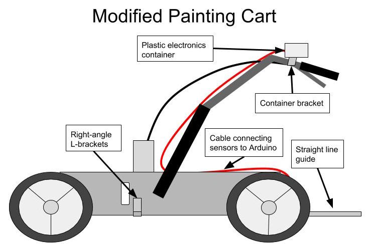
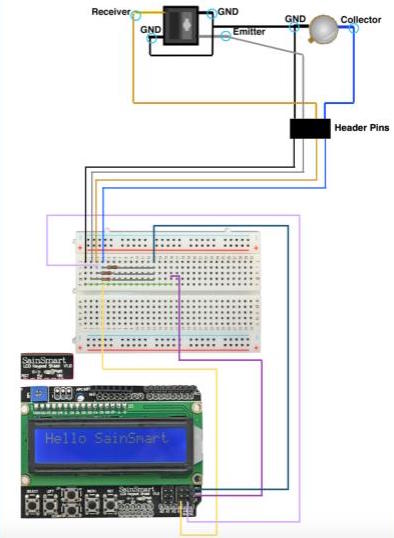
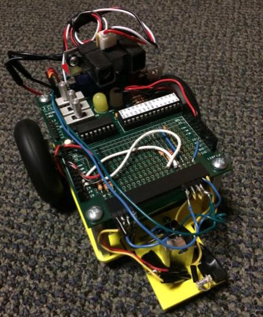

Project Experience
Weather Responsive Cloud Light
A prototype for a cloud-shaped lamp which simulates realtime weather in a user designated location. The lamp looks like a puffy cloud, and can display rain, snow, and lightning of varying intensities, as well as sunrise and sunset. The user can turn the lamp on and off from a web server, as well as change its overall brightness. In addition, the lamp can display the current weather in any US zip code.
This project was designed and executed with Coco Stiff as the final project for E155 Microprocessor-based Systems: Design and Applications. A Raspberry Pi was used to host the web server, and make API calls to openweathermap.org. It filters the API call for specific weather data, which is then sent to an FPGA. The FPGA decodes weather signals like "rain" into LED actions, and controls the six LED strands in the lamp via SPI. The six LED strands are DotStar assignable LEDs, and three are used to light the lanterns, while another three hang below the lamp to simulate rain and snow.
Design of the project was done equally by both of us- while online instructables exist for similar lamps, we did not know they existed until we had finished the project. Coco used her prior experience in API calls for the software on the Pi, and implemented the web server. I worked primarily on the FPGA's Verilog firmware. I set up SPI communication between the FPGA and Pi, and implemented the decoder which translated the 16-bit instructions sent from the Pi into LED commands. I also wrote the modules controlling the LEDs, including those used to simulate rainfall. Initial SPI setup between the FPGA and LEDs was pair-programmed by both of us.
The github repository for the project can be found here, while our final report can be found here.
Sleep Dep Buddy
A prototype for an interactive desk pet. The pet has animated movements, and can be fed by the user. The device measures ambient light, which it monitors as an indicator of user sleep health. The health of the pet declines when the user is sleep deprived, encouraging the user to maintain healthier habits.
I worked in a group of four, competing in Harvey Mudd's Hardware Hackathon. Our project won second in the Hackathon, and our project was featured in the LA Times as part of an article about women in STEM. My contributions included working with another member of the team to set up and calibrate an accelerometer, and designing the wooden case and fitting the components inside for the final prototype, as well as helping to present our work to the judges.
The github for the project can be found here.
Autonomous Underwater Vehicle
An autonomous underwater vehicle which measured ocean temperature, pressure, and turbidity, in order to investigate how tide and depth affect ocean temperature and turbidity. The pressure sensor was calibrated to freshwater and seawater at different elevations, and used to determine the vehicle's depth. Multiple deployments of the vehicle over the course of the day were used to attempt to correlate changes in turbidity and temperature at different depths to the effect of tides and time of day.
The AUV was created as part of coursework for E80 Experimental Engineering. Together we designed the code with made the vehicle autonomous, and set up and calibrated the pressure, turbidity and temperature sensors. We also worked together on experiment design and sensor choice. I did the statistical analysis of our deployment data, while other members of the team worked on error analysis.
Ultimately we were constrained to one day of data collection in the ocean. As a result, we were only able to compare data over the course of a few hours. In addition, we only managed a depth range of a few meters. As a result, there was enough variation in the data that we could only confidently claim that ocean temperature increases with time of day.
The github repository for the project can be found here, while our final presentation can be found here.
Semi-Autonomous Soccer Field Layout
A prototype of a soccer field layout aid, designed for a client who organized a youth soccer league. Previously, laying out a soccer field required two step- first, with string and stakes, to measure the corner and reference points of the field, and second, to walk through the lines with a chalk-dispensing line marker. Our aid would be mounted on this line marker, and could instruct the user where to go as they made the chalk lines of the field. This eliminated the first step in field layout, halving the time necessary for the task, and freeing the user from needing to physically make any measurements. The aid was preprogrammed with all common children's league soccer field dimensions, and could calculate custom field sizes based on an input height and width.
We used an Arduino Uno attached to a reflectance sensor and lcd screen/keypad. The reflectance sensor served as a wheel encoder, informing the arduino how far the user had walked. The arduino provided constant user feedback of their progress, and notified the user when they needed to turn. The user would choose from preset field sizes, or input their own, and recieve instructions that would allow them to lay out the entire field. In addition, we made physical modifications to the line marker which made straight lines and right angles more obvious.
This project was completed in a team of three. I headed the initial setup of the sensor and lcd screen, and with another member of the team pair-programmed all of the Arduino code. The third team member did the physical modifications, and the initial design process and contact with the client was done as a group.
The github repository for the project can be found here.

Autonomous Arduino Vehicle
A small autonomously controlled robot which navigated a playing field and used a diode to broadcast gold codes at beacons to score points. This project was completed with a partner, Evan Amason, as part of a freshman Autonomous Vehicles course. I made all physical design and modification of the vehicle, and implemented gold code broadcasting, while the beacon finding algorithm was done by my partner. While clumsy in retrospect, this project was a fun introduction to Arduino and engineering as a whole.